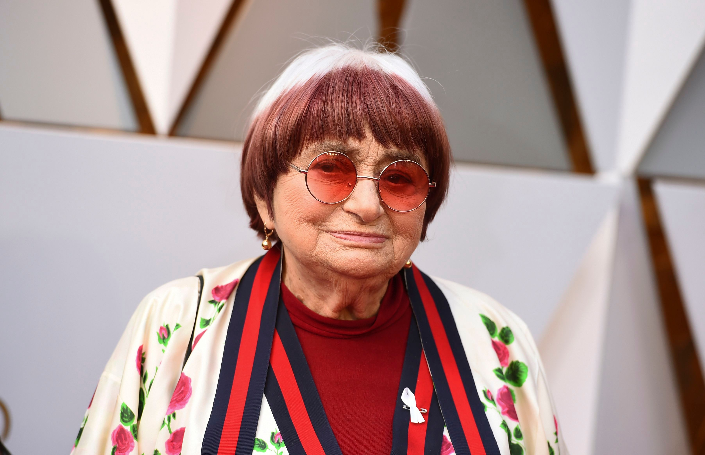

Agnes Varda
A pioneer of the French New Wave

Agnes Varda at the Oscars
Here's a look at Agnes Varda's life:
- Varda was born Arlette Varda on 30 May 1928 in Ixelles, Brussels, Belgium
- Varda attended the Lycee et college Victor-Duruy, and received a bachelor's degree in literature and psychology from the Sorbonne.
- Varda intended to become a museum curator, and studied art history at the Ecole du Louvre, but decided to study photography at the Vaugirard School of Photography instead. She began her career as a still photographer before becoming one of the major voices of the Left Bank Cinema and the French New Wave.
- In 1954, Varda's first film, La Pointe Courte, about an unhappy couple working through their relationship in a small fishing town, was released.The film is a stylistic precursor to the French New Wave.
- Following La Pointe Courte, Varda made several documentary short films; two were commissioned by the French tourist office. These shorts include one of Varda's favorites of her own works, L'opera-mouffe, a film about the Rue Mouffetard street market which won Varda an award at the Brussels Experimental Film Festival in 1958.
- In 1977, Varda founded her own production company, Cine-Tamaris, in order to have more control over shooting and editing.
- In 1985, Varda made Sans toit ni loi ("without roof nor law"; known in most English-speaking countries as Vagabond), a drama about the death of a young female drifter named Mona.
- In 1991, shortly after her husband Jacques Demy's death, Varda created the film Jacquot de Nantes, which is about his life and death.
- Les Glaneurs et la Glaneuse (The Gleaners and I), a documentary, focuses on Varda's interactions with gleaners (harvesters) who live in the French countryside, and also includes subjects who create art through recycled material, as well as an interview with psychoanalyst Jean Laplanche.
- In 2017, Varda co-directed Faces Places with the artist JR. The film was screened out of competition at the 2017 Cannes Film Festival where it won the L'Œil d'or award.
- Varda was a member of the jury at the Cannes Film Festival in 2005 and a member of the jury at the Venice Film Festival in 1983.
- In 2002 she was the recipient of the French Academy prize, René Clair Award.
- On 4 March 2007, she was appointed a Grand Officer of the National Order of Merit of France.
- On 12 April 2009, she was made Commandeur de la Légion d'honneur.
- Varda died from cancer on 29 March 2019 in Paris, at the age of 90.
References: wikipedia.org